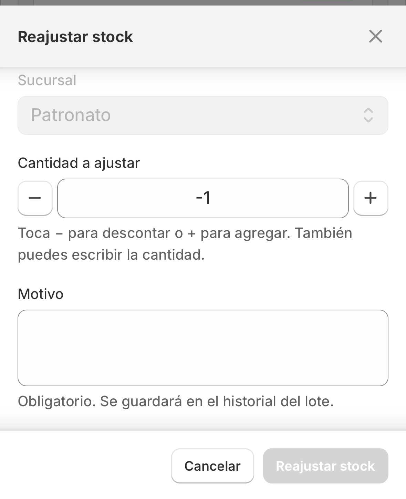
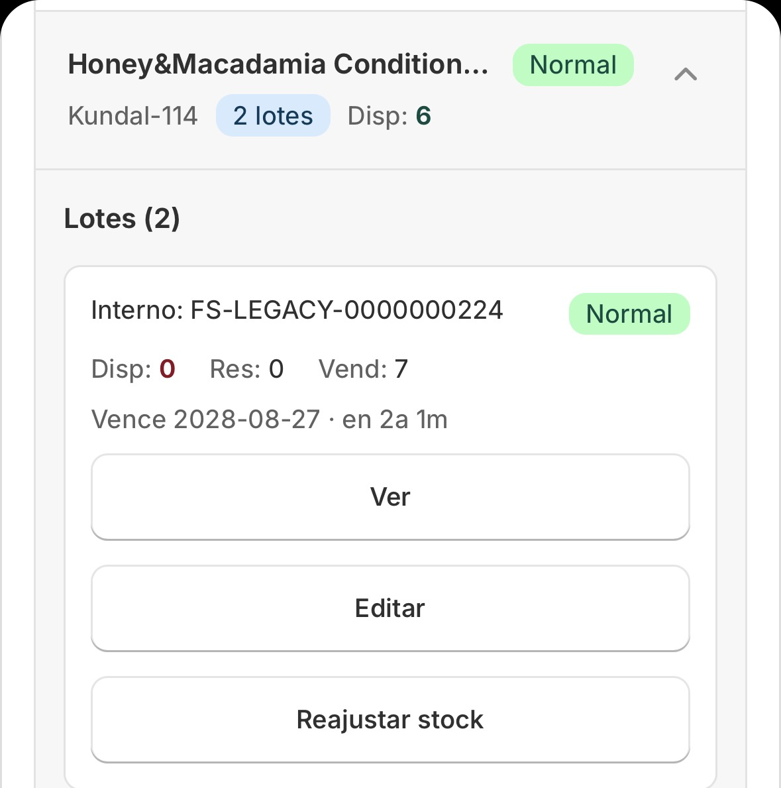
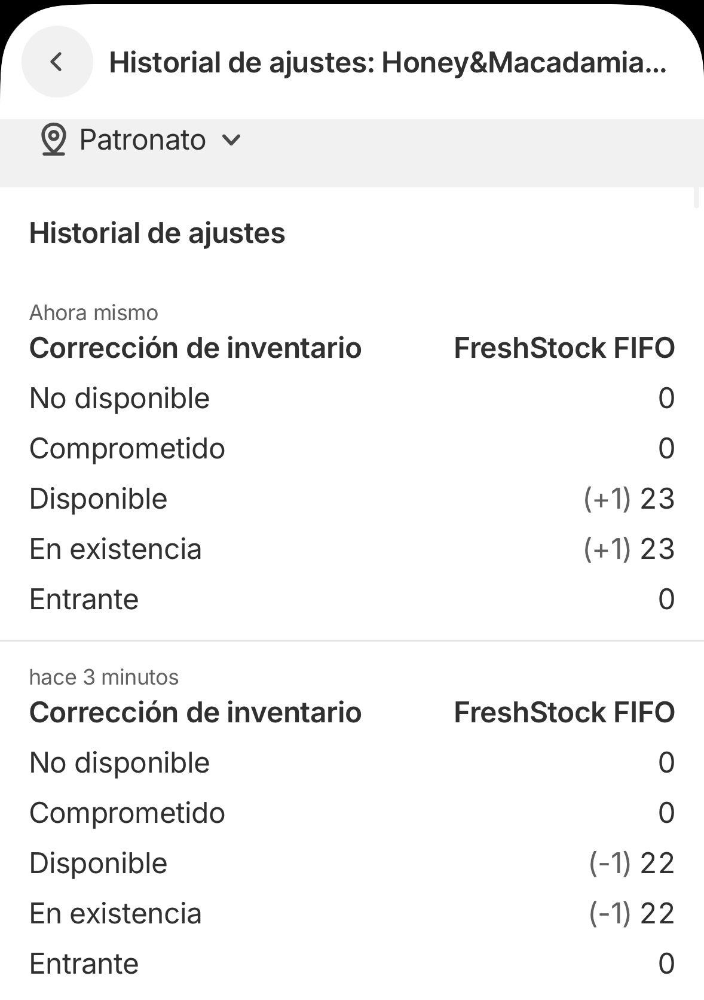

Documentación
Guía completa para configurar y aprovechar al máximo FreshStock FIFO.
Instalación
1. Ve a la Shopify App Store y busca FreshStock FIFO.
2. Haz clic en Agregar app y selecciona la tienda donde instalarla.
3. Acepta los permisos requeridos — la app necesita acceso a productos e inventario para funcionar.
4. Una vez instalada, serás redirigido al Dashboard de la app dentro de tu admin de Shopify.
Configuración inicial
Al abrir la app por primera vez, configura:
- Días de anticipación para alertas: cuántos días antes del vencimiento quieres recibir una notificación.
- Ubicaciones: selecciona las ubicaciones de tu tienda que quieres gestionar con FIFO.
- Notificaciones: activa o desactiva alertas por email (próximamente).
Dashboard de métricas
El dashboard es la pantalla principal de la app. Muestra en tiempo real:
- Inventario próximo a vencer: productos que vencen dentro del rango configurado.
- Costos en riesgo: valor monetario del inventario próximo a expirar.
- Productos expirados: lotes que ya superaron su fecha de vencimiento.
- Ofertas activas: descuentos automáticos creados por la app actualmente vigentes.
Control de inventario FIFO
El módulo de inventario permite gestionar tu stock por lotes, cada uno con fecha de ingreso y fecha de vencimiento.
Cómo agregar un lote:
- Ve a la sección Inventario en la app.
- Selecciona el producto y variante.
- Ingresa la cantidad, fecha de ingreso y fecha de vencimiento.
- Guarda el lote.
El sistema priorizará automáticamente los lotes más antiguos al mostrar alertas y al crear ofertas (First In, First Out).
Transferencias entre sucursales
FreshStock FIFO permite crear transferencias de inventario entre sucursales con trazabilidad completa por lote, integradas directamente con la API de Shopify.
📦 Cómo crear una transferencia:
- Ve a Transferencias en la app.
- Selecciona la sucursal de origen, sucursal de destino, el producto y la cantidad.
- FreshStock sugiere automáticamente los lotes a transferir usando lógica FEFO/FIFO (primero vence, primero sale).
- Ajusta manualmente los lotes si lo necesitas y confirma la transferencia.
- La transferencia se crea en Shopify y queda en estado READY_TO_SHIP hasta que se reciba en destino.
🔄 Estados de transferencia:
| Estado | Significado |
|---|---|
| CREATING | FreshStock está creando la transferencia |
| READY_TO_SHIP | Creada, pendiente de recepción en destino |
| PARTIALLY_RECEIVED | Shopify confirmó recepción parcial |
| COMPLETED | Toda la cantidad fue recibida en destino |
| CANCELLED | Shopify canceló la transferencia; se restaura stock en origen |
| FAILED | Falló la creación o sincronización con Shopify |
| MANUAL_REVIEW | Modificada externamente; requiere revisión humana |
📱 Vista responsive:
Las transferencias se agrupan por documento en un acordeón expandible, con paginación de 50 items y lazy loading para una navegación ágil incluso en dispositivos móviles.
Nota: Actualmente cada transferencia mueve una variante por documento. Solo se registra trazabilidad de transferencias creadas desde FreshStock, no de las creadas manualmente en Shopify.
Ajuste de inventario
El módulo de ajuste de stock permite corregir manualmente las cantidades de un lote, registrando cada cambio con motivo y trazabilidad completa.
✏️ Cómo reajustar el stock de un lote:
- Ve a Inventario y selecciona la sucursal.
- Busca el producto y expande el lote que quieres ajustar.
- Haz clic en "Reajustar stock".
- En el modal, usa los controles +/- o ingresa la cantidad directamente (valores negativos para descontar, positivos para añadir).
- Escribe el motivo del ajuste (obligatorio).
- Haz clic en "Reajustar stock" para confirmar.
Vista del modal de reajuste

Cada ajuste queda registrado en el Historial de ajustes del producto, accesible desde la misma vista de inventario. El historial muestra:
- Tipo de movimiento ("Corrección de inventario")
- Timestamp y responsable
- Desglose de cantidades: disponible, en existencia, no disponible, comprometido, entrante
- Filtro por sucursal
Vista del historial de ajustes

Importante: El botón "Reajustar stock" solo se habilita cuando el motivo está completo. Esto asegura que todo ajuste tenga justificación documentada para auditoría.
Trazabilidad
Cada lote tiene una bitácora cronológica que registra todos los eventos de su ciclo de vida. Esto permite trazabilidad completa desde el ingreso hasta la venta o vencimiento.
🔍 La bitácora incluye:
- Creación del lote: fecha, cantidad inicial, costo y origen.
- Reservas de venta: unidades comprometidas a órdenes no completadas.
- Ventas completadas: unidades despachadas y facturadas.
- Transferencias: movimientos entre sucursales con vínculo al lote origen.
- Ajustes manuales: correcciones de stock con motivo y responsable.
- Ediciones: cambios en fechas de vencimiento, costos u otros atributos.
- Eventos de Shopify: sincronización de cambios detectados vía webhooks.
Vista de inventario con acceso al ajuste y bitácora

La trazabilidad unifica eventos de ventas, transferencias, webhooks de Shopify y acciones manuales en un solo timeline, dando visibilidad completa del ciclo de vida de cada lote.
Nota: Los lotes creados por transferencia heredan el número de lote y costo del origen. La fecha de recepción corresponde al momento real de llegada a destino, permitiendo rastrear el camino completo entre sucursales.
Alertas de vencimiento
La app genera alertas automáticas cuando algún lote está próximo a vencer, según los días de anticipación configurados.
Las alertas aparecen en el Dashboard y en la sección Alertas de la app.
Configurar días de anticipación:
- Ve a Configuración en la app.
- Ajusta el campo Días de anticipación (por defecto: 30 días).
- Guarda los cambios.
Ofertas automáticas
FreshStock FIFO puede crear descuentos automáticos en Shopify para los productos próximos a vencer, ayudándote a recuperar el valor del inventario.
Cómo crear una oferta automática:
- Ve a la sección Ofertas en la app.
- Selecciona el lote al que quieres aplicar descuento.
- Define el porcentaje de descuento, fecha de inicio y fecha de término.
- La app crea automáticamente el descuento en tu tienda Shopify.
Nota: Los descuentos creados por la app aparecerán en la sección Descuentos de tu admin de Shopify.
Reportes y análisis
La sección de reportes muestra estadísticas históricas de tu inventario:
- Rotación de inventario: qué tan rápido se mueven tus productos.
- Productos vencidos: historial de lotes expirados y costos asociados.
- Costos recuperados: valor recuperado gracias a las ofertas automáticas.
- Tendencias de stock: evolución del inventario en el tiempo.
¿Tienes dudas?
Deja tu pregunta en los comentarios y te respondemos.